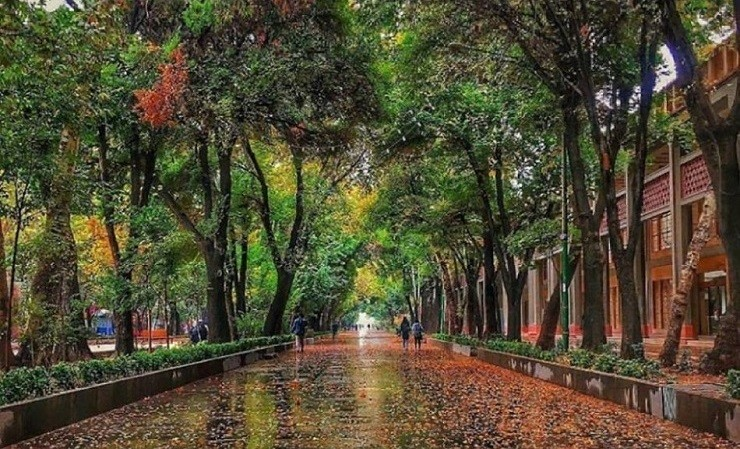

آشنایی با محل تولد من
اصفهان

اصفهان شهری تاریخی در مرکز ایران است. این شهر مرکز استان اصفهان و نیز شهرستان اصفهان است. اصفهان، سومین شهر بزرگ ایران، سومین شهر پرجمعیت ایران پس از تهران و مشهد به شمار میرود. ین شهر در بین سالهای ۱۰۵۰ تا ۱۷۲۲ میلادی به ویژه در سدهٔ شانزدهم میلادی در هنگام پادشاهی صفویان پایتخت ایران شد و رونق فراوانی گرفت. بناهای تاریخی متعددی در شهر وجود دارد که شماری از آنها به عنوان میراث تاریخی در یونسکو به ثبت رسیدهاند. این شهر به داشتن معماری زیبای ایرانی، پلهای سرپوشیده، مسجدها و منارههای منحصربهفردش نامآور است. این امر سبب شده تا در فرهنگ عامه، اصفهان نصف جهان، لقب بگیرد. این شهر در آذر ۱۳۹۴ (دسامبر ۲۰۱۵) به همراه رشت به عنوان نخستین شهرهای ایران، به شبکه شهرهای خلاق جهان زیر نظر یونسکو پیوست